EpyScenario · SOAR / IRS
An end-to-end worked example. Follow one Oregon scenario through three progressively more realistic runs and you will have used every core part of the tool: setup, calibration to real surveillance data, and vaccination planning.
A public-health analyst who is comfortable with surveillance data but new to simulation modeling. No modeling background is assumed — each modeling idea is explained the first time it appears. If a term is unfamiliar, check the Glossary at the end.
The running example: pertussis (whooping cough) in Lane County, Oregon (modeled population ≈ 381,181), calibrated to Lane County's age breakdown and Oregon's statewide CDC NNDSS weekly case curve. Every figure in this manual was produced by the steps it describes.
| Run | What you do | What you learn |
|---|---|---|
| 1 · Baseline | Run with default settings, no tuning | How to set up and run a scenario; what an uncalibrated result means |
| 2 · Calibrated | Fit the model to Lane County + Oregon NNDSS data with ABC-SMC | How to anchor the model to reality and read the result |
| 3 · + Vaccination | Add the CDC DTaP/Tdap schedule | How an immunization program changes the outlook |
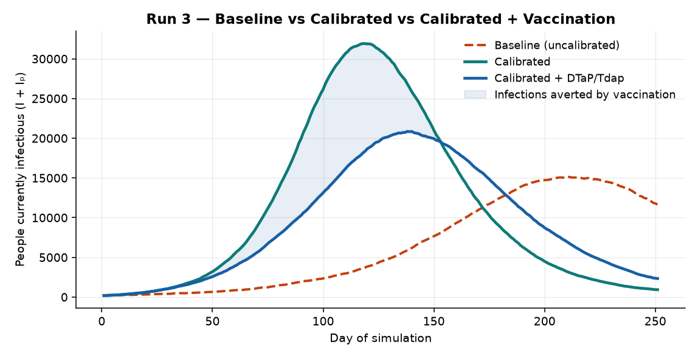
EpyScenario is a compartmental simulator. Instead of tracking individual people, it divides the population into groups ("compartments") — susceptible, exposed, infectious, recovered — and moves people between them over time using rates you control. For pertussis there are two parallel tracks (fully susceptible people and partially-immune people whose protection has waned); the compartmental-model diagram shows the full structure. You do not need to understand the math to use the tool.
http://localhost:8501.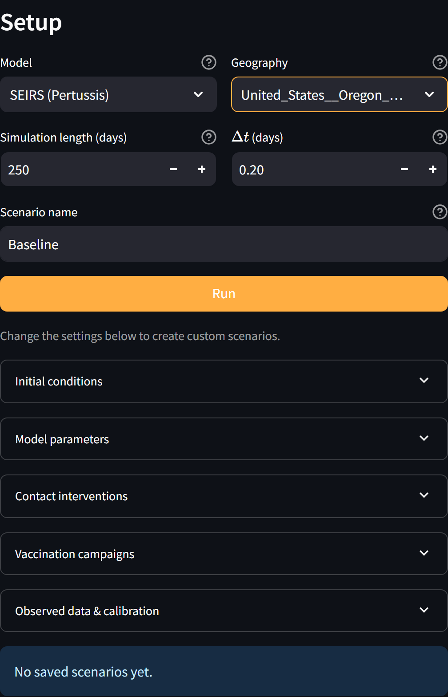
Goal: get your first curve with zero tuning, and understand exactly what that curve does — and does not — tell you.
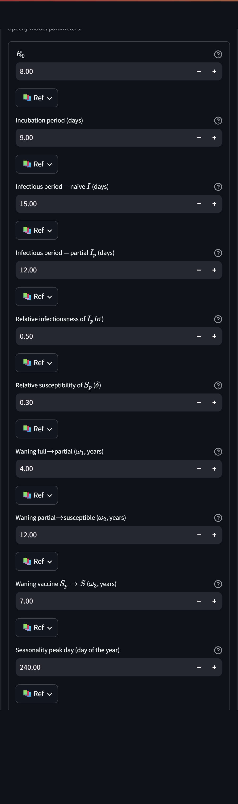
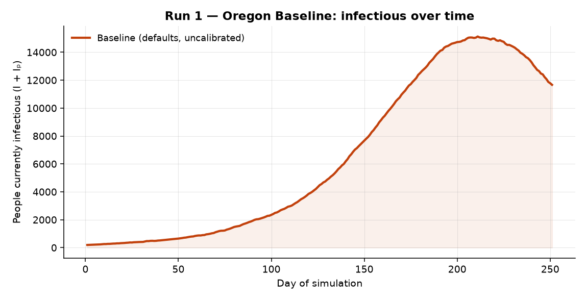
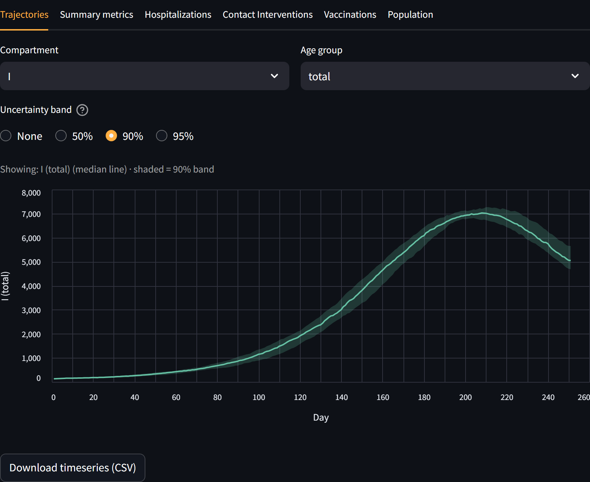
This curve uses generic literature values, not anything specific to Oregon. Treat it as "what pertussis looks like in the abstract," not a forecast for Lane County. The peak height in particular is not meaningful yet — that is what Run 2 fixes. Uncalibrated runs are for sanity-checking the setup and exploring behavior, not for briefing decision-makers.
Goal: anchor the model to Oregon reality. "Calibration" means automatically searching for the parameter values that make the model best match observed data. EpyScenario uses ABC-SMC (Approximate Bayesian Computation — Sequential Monte Carlo), which returns not a single best guess but a range for each parameter, so you can see how certain the fit is.
You attach two observed targets and each constrains something different:
• Lane County age breakdown — who gets pertussis (the split across age bands). This pins down the immunity/susceptibility parameters.
• Oregon NNDSS weekly curve — the shape and timing of the outbreak (how fast it grows, when it peaks). This is the main lever on R₀ (how transmissible the model thinks pertussis is).
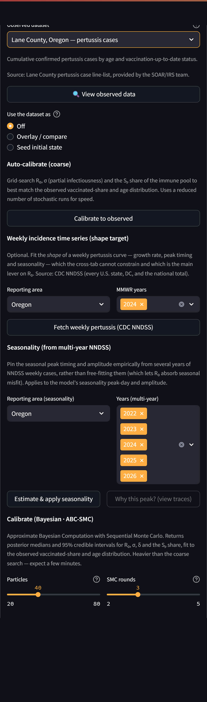
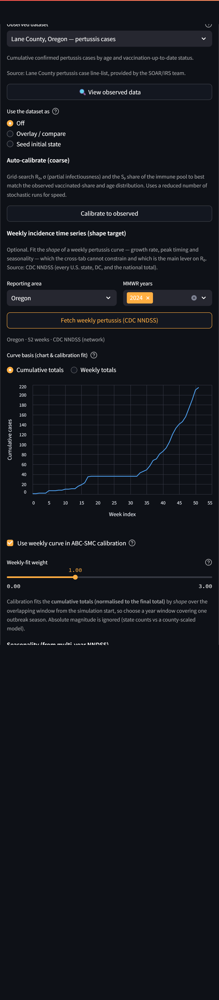
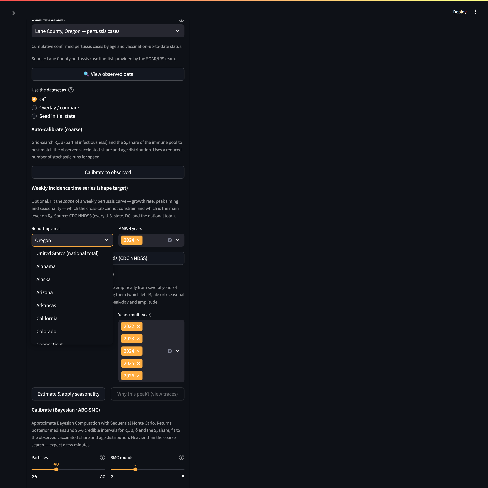
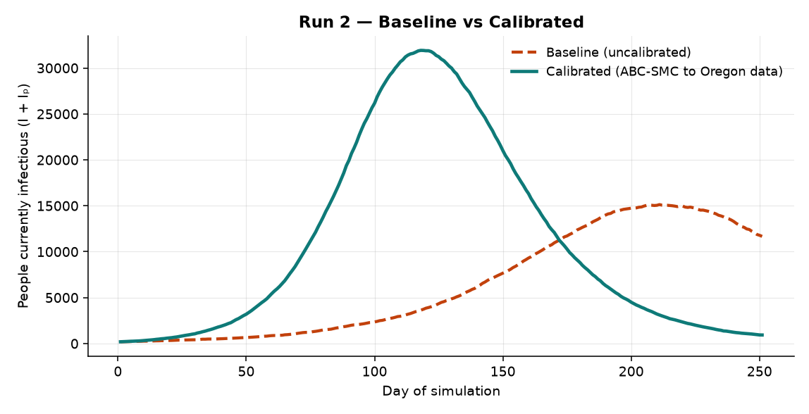
ABC-SMC reports a median and a 95% credible interval (CrI) for each fitted parameter — the interval is the range the data support. A narrow interval means the data pin that parameter down well; a wide one means it remains uncertain.
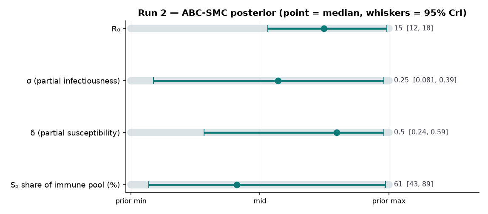
| Parameter | Calibrated median | 95% credible interval |
|---|---|---|
| R₀ | 15 | 12 – 18 |
| σ (partial infectiousness) | 0.25 | 0.081 – 0.39 |
| δ (partial susceptibility) | 0.5 | 0.24 – 0.59 |
| Sₚ share of immune pool (%) | 61% | 43% – 89% |
Confirmed pertussis counts capture only a fraction of true infections (often 1 in 10 or fewer, and it varies by age). That is why calibration here fits the shape of the weekly curve, not its absolute height — and why you should read the calibrated peak as a modeled quantity, not a promised case count.
Goal: keep the calibrated model from Run 2 and layer on a realistic immunization program to see its effect.
The DTaP/Tdap vaccine is not sterilizing and its protection wanes. So in the model, vaccinating someone does not remove them from circulation — it moves them from fully susceptible (S) into the partially-immune track (Sₚ), where they are less likely to be infected and less infectious if they are. This is the vaccination arrow in the model diagram.
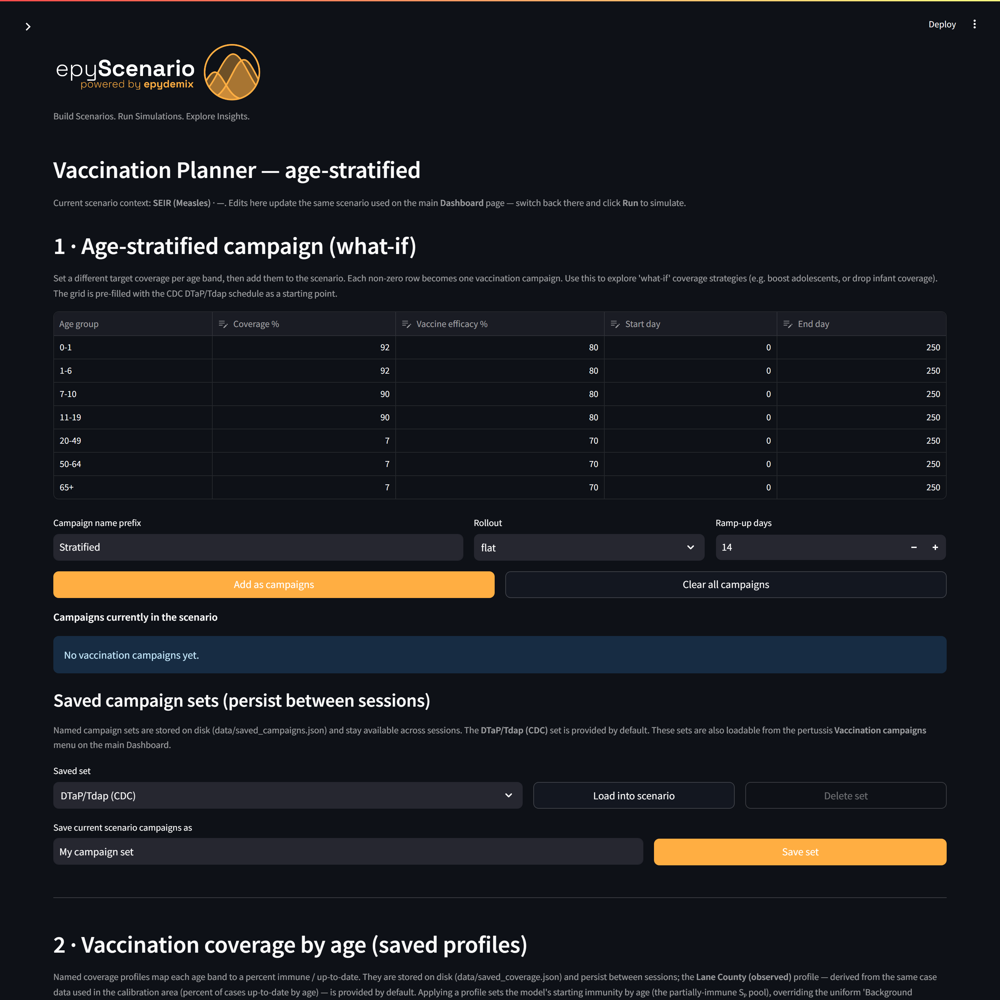
Only because Run 2 anchored the model to Oregon data is this vaccination comparison meaningful. Running vaccination on top of the uncalibrated model would have compared two abstractions. Calibrate first, then intervene.
| Term | Plain-English meaning |
|---|---|
| Compartment | A group the population is divided into (e.g. Infectious). People move between compartments over time. |
| SEIRS | Susceptible → Exposed → Infectious → Recovered → (back to) Susceptible as immunity wanes. |
| Partial-immunity track (Sₚ,Eₚ,Iₚ,Rₚ) | A parallel set of compartments for people with waned/partial protection — milder, less transmissible infections. |
| R₀ | Basic reproduction number: average people one case infects in a fully susceptible population. Main driver of how explosive an outbreak is. |
| Calibration | Automatically tuning parameters so the model matches observed data. |
| ABC-SMC | The Bayesian calibration method used here. Returns a range (posterior) for each parameter, not just one value. |
| Posterior / credible interval | The set of parameter values consistent with the data; the 95% CrI is where the truth most plausibly lies. |
| NNDSS | CDC's National Notifiable Diseases Surveillance System — the weekly case source used as the timing target. |
| Symptom | Fix |
|---|---|
| "Fetch weekly" returns nothing | The app falls back to a local cache; if a year has no data, pick another MMWR year (2024 is used here). |
| ABC-SMC is slow | Lower Particles or SMC rounds; both trade fit quality for speed. A few minutes at 40×3 is normal. |
| Calibration "won't converge" / too few accepted | The tolerance may be too tight for the priors — reduce rounds, or widen the run horizon so the weekly window overlaps the data. |
| Empty result chart | Make sure you clicked Run on the Dashboard after calibrating or editing the vaccination plan. |